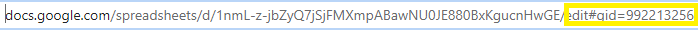
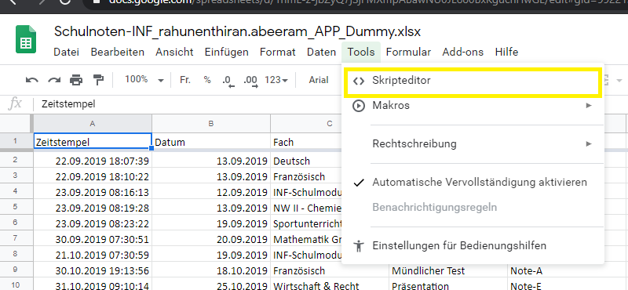
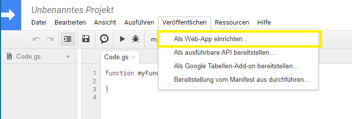
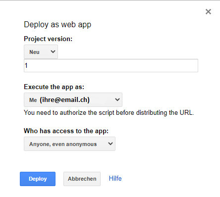
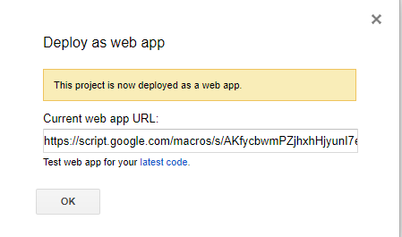
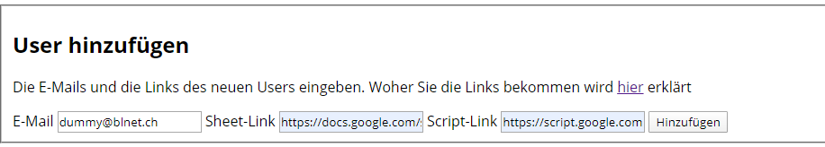

Anleitung - Sheetlink und Scriptlinks bekommen
Diese beiden Links sind nötig, um das Notenformular einwandfrei benutzen zu können. Öffnen Sie zuerst das Management-Interface und loggen Sie sich mit den Daten ein.
Sheetlink
Den Sheetlink bekommen ist einfach: Sie müssen das Spreadsheet-Dokument vom existierenden Notenformular öffnen und den Link kopieren. Den Link müssen Sie jedoch bearbeiten:
Den gelb markierten Teil müssen Sie entfernen. Diesen Link können Sie dann im Management-Interface einfügen.
Scriptlink
Beim Scriptlink wird es ein bisschen schwieriger. Dafür müssen Sie das Google Spreadsheet-Dokument (Sheetlink) öffnen. Dann klicken Sie auf "Tools" und dann auf "Skripteditor"
Jetzt müsste eine neue Seite geöffnet sein. Hier müssen Sie jetzt den folgenden Code einfügen und den vorhandenen löschen. "SHEETLINKHIEREINFÜGEN" durch den Sheetlink des jeweiligen Users, der gerade eingerichtet wird, ersetzen.
var ss = SpreadsheetApp.openByUrl("SHEETLINKHIEREINFÜGEN");
var sheet = ss.getSheetByName('Formularantworten'); // be very careful ... it is the sheet name .. so it should match
function doPost(e){
var action = e.parameter.action;
if(action == 'addItem'){
return addItem(e);
}
}
function addItem(e){
var date = new Date();
var datefromuser = e.parameter.datum;
var fach = e.parameter.fach;
var thema = e.parameter.themaPruefung;
var notentyp = e.parameter.notenTyp;
var note = e.parameter.note;
var begruendung = e.parameter.begruendung;
sheet.appendRow([date,datefromuser,fach,thema,notentyp,note,begruendung]);
return ContentService.createTextOutput("Success").setMimeType(ContentService.MimeType.TEXT);
}
Jetzt sollten Sie das Skript mit Strg+S speichern. Sie werden gefragt, dem File einen Namen zu geben. Wie Sie es nennen ist ihnen frei überlassen. Dann klicken Sie auf "Veröffentlichen" und dann auf "Als Web-App einrichten...".
Jetzt wird ein Fenster erscheinen. Den Versionnamen können Sie nach ihren Belieben vergeben, der Rest sollte wie im Screenshot eingestellt werden. Dann auf "Deploy" klicken
Der Link der jetzt erscheint, ist der Scriptlink.
Diesen können Sie jetzt auch im Management-Interface eingeben. Jetzt können Sie auf "Hinzufügen" klicken.
